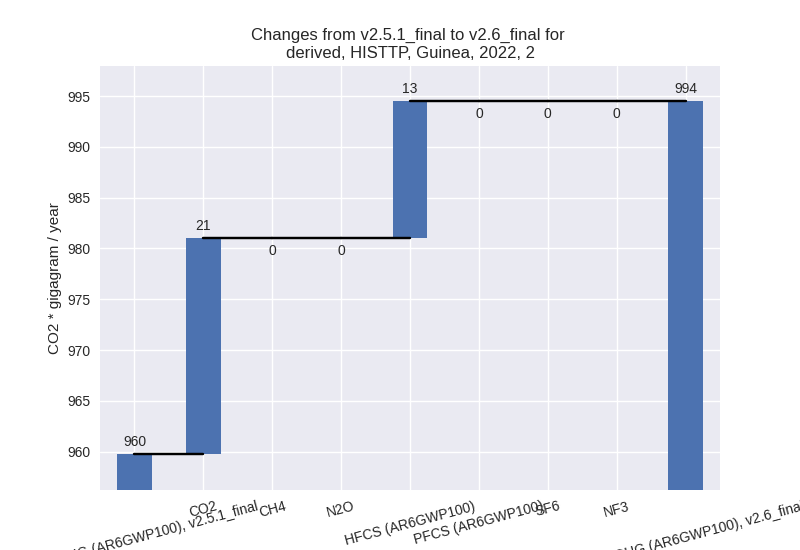

Changes in PRIMAP-hist v2.6_final compared to v2.5.1_final for Guinea
2024-09-24
Johannes Gütschow
Change analysis for Guinea for PRIMAP-hist v2.6_final compared to v2.5.1_final
Overview over emissions by sector and gas
The following figures show the aggregate national total emissions excluding LULUCF AR6GWP100 for the country reported priority scenario. The dotted linesshow the v2.5.1_final data.
The following figures show the aggregate national total emissions excluding LULUCF AR6GWP100 for the third party priority scenario. The dotted linesshow the v2.5.1_final data.
Overview over changes
In the country reported priority scenario we have the following changes for aggregate Kyoto GHG and national total emissions excluding LULUCF (M.0.EL):
- Emissions in 2022 have changed by -45.9%% (-15040.70 Gg CO2 / year)
- Emissions in 1990-2022 have changed by -50.9%% (-10130.90 Gg CO2 / year)
In the third party priority scenario we have the following changes for aggregate Kyoto GHG and national total emissions excluding LULUCF (M.0.EL):
- Emissions in 2022 have changed by 1.9%% (634.66 Gg CO2 / year)
- Emissions in 1990-2022 have changed by 1.4%% (287.97 Gg CO2 / year)
Most important changes per scenario and time frame
In the country reported priority scenario the following sector-gas combinations have the highest absolute impact on national total KyotoGHG (AR6GWP100) emissions in 2022 (top 5):
- 1: M.AG.ELV, CH4 with -6361.49 Gg CO2 / year (-99.6%)
- 2: M.AG.ELV, N2O with -2815.43 Gg CO2 / year (-45.9%)
- 3: 4, CH4 with -2766.14 Gg CO2 / year (-93.1%)
- 4: 1.A, CH4 with -1570.14 Gg CO2 / year (-90.4%)
- 5: 2, HFCS (AR6GWP100) with -909.84 Gg CO2 / year (-98.9%)
In the country reported priority scenario the following sector-gas combinations have the highest absolute impact on national total KyotoGHG (AR6GWP100) emissions in 1990-2022 (top 5):
- 1: M.AG.ELV, CH4 with -4714.54 Gg CO2 / year (-99.2%)
- 2: M.AG.ELV, N2O with -2076.28 Gg CO2 / year (-54.0%)
- 3: 4, CH4 with -1837.15 Gg CO2 / year (-94.3%)
- 4: 1.A, CH4 with -1308.90 Gg CO2 / year (-88.7%)
- 5: 2, HFCS (AR6GWP100) with -301.00 Gg CO2 / year (-99.0%)
In the third party priority scenario the following sector-gas combinations have the highest absolute impact on national total KyotoGHG (AR6GWP100) emissions in 2022 (top 5):
- 1: 1.A, CO2 with 263.92 Gg CO2 / year (7.1%)
- 2: 5, N2O with 180.96 Gg CO2 / year (108.1%)
- 3: 4, CH4 with 143.67 Gg CO2 / year (4.8%)
- 4: 2, CO2 with 21.25 Gg CO2 / year (53.5%)
- 5: 2, HFCS (AR6GWP100) with 13.48 Gg CO2 / year (1.5%)
In the third party priority scenario the following sector-gas combinations have the highest absolute impact on national total KyotoGHG (AR6GWP100) emissions in 1990-2022 (top 5):
- 1: 5, N2O with 235.92 Gg CO2 / year (222.0%)
- 2: 1.A, CO2 with 17.53 Gg CO2 / year (0.8%)
- 3: 4, CH4 with 17.12 Gg CO2 / year (0.9%)
- 4: 4, N2O with 7.49 Gg CO2 / year (7.8%)
- 5: 2, CO2 with 6.11 Gg CO2 / year (22.7%)
Notes on data changes
Here we list notes explaining important emissions changes for the country. ’' means that the following text only applies to the TP time series, while means that it only applies to the CR scenario. Otherwise the note applies to both scenarios.
- We have included data from BUR1 and for the first time have usable country reported data for Guinea. This has lead to changes in several sectors and gases in the CR scenario, especially to much lower emissions from agriculture and waste sectors
- CH4 emissions in M.AG.ELV emissions in BUR1 are much lower than FAOSTAT, all reported emissions in this category come from burning of biomass (3.C.1)
- N2O emissions from BUR1 are much lower than FAOSTAT as well (but almost perfectly in line with EDGAR 8.0)
- CH4 emissions from waste (4) and from fossil fuel combustion (1.A) in BUR1 are much lower than EDGAR8.0
- HFC emissions are much lower in BUR1 than in EDGAR 7.0
- The removal of FAOSTAT data in the “other” category impacts both CR and TP time-series (for N2O)
Changes by sector and gas
For each scenario and time frame the changes are displayed for all individual sectors and all individual gases. In the sector plot we use aggregate Kyoto GHGs in AR6GWP100. In the gas plot we usenational total emissions without LULUCF. ## country reported scenario
2022
1990-2022
third party scenario
2022
1990-2022
Detailed changes for the scenarios:
country reported scenario (HISTCR):
Most important changes per time frame
For 2022 the following sector-gas combinations have the highest absolute impact on national total KyotoGHG (AR6GWP100) emissions in 2022 (top 5):
- 1: M.AG.ELV, CH4 with -6361.49 Gg CO2 / year (-99.6%)
- 2: M.AG.ELV, N2O with -2815.43 Gg CO2 / year (-45.9%)
- 3: 4, CH4 with -2766.14 Gg CO2 / year (-93.1%)
- 4: 1.A, CH4 with -1570.14 Gg CO2 / year (-90.4%)
- 5: 2, HFCS (AR6GWP100) with -909.84 Gg CO2 / year (-98.9%)
For 1990-2022 the following sector-gas combinations have the highest absolute impact on national total KyotoGHG (AR6GWP100) emissions in 1990-2022 (top 5):
- 1: M.AG.ELV, CH4 with -4714.54 Gg CO2 / year (-99.2%)
- 2: M.AG.ELV, N2O with -2076.28 Gg CO2 / year (-54.0%)
- 3: 4, CH4 with -1837.15 Gg CO2 / year (-94.3%)
- 4: 1.A, CH4 with -1308.90 Gg CO2 / year (-88.7%)
- 5: 2, HFCS (AR6GWP100) with -301.00 Gg CO2 / year (-99.0%)
Changes in the main sectors for aggregate KyotoGHG (AR6GWP100) are
- 1: Total sectoral emissions in 2022 are 3807.74 Gg
CO2 / year which is 21.5% of M.0.EL emissions. 2022 Emissions have
changed by -38.7% (-2405.55 Gg CO2 /
year). 1990-2022 Emissions have changed by -34.9% (-1433.81 Gg CO2 / year). For 2022
the changes per gas
are:
For 1990-2022 the changes per gas are:
The changes come from the following subsectors:- 1.A: Total sectoral emissions in 2022 are 3281.76
Gg CO2 / year which is 86.2% of category 1 emissions. 2022 Emissions
have changed by -42.3% (-2405.55 Gg
CO2 / year). 1990-2022 Emissions have changed by -38.0% (-1433.81 Gg CO2 / year). For 2022
the changes per gas
are:
For 1990-2022 the changes per gas are:
There is no subsector information available in PRIMAP-hist. - 1.B.1: Total sectoral emissions in 2022 are 466.62 Gg CO2 / year which is 12.3% of category 1 emissions. 2022 Emissions have changed by 0.0% (0.00 Gg CO2 / year). 1990-2022 Emissions have changed by 0.0% (0.00 Gg CO2 / year).
- 1.B.2: Total sectoral emissions in 2022 are 59.36 Gg CO2 / year which is 1.6% of category 1 emissions. 2022 Emissions have changed by 0.0% (0.00 Gg CO2 / year). 1990-2022 Emissions have changed by 0.0% (0.00 Gg CO2 / year).
- 1.A: Total sectoral emissions in 2022 are 3281.76
Gg CO2 / year which is 86.2% of category 1 emissions. 2022 Emissions
have changed by -42.3% (-2405.55 Gg
CO2 / year). 1990-2022 Emissions have changed by -38.0% (-1433.81 Gg CO2 / year). For 2022
the changes per gas
are:
- 2: Total sectoral emissions in 2022 are 138.93 Gg
CO2 / year which is 0.8% of M.0.EL emissions. 2022 Emissions have
changed by -85.5% (-820.82 Gg CO2 /
year). 1990-2022 Emissions have changed by -89.4% (-295.99 Gg CO2 / year). For 2022
the changes per gas
are:
For 1990-2022 the changes per gas are: - M.AG: Total sectoral emissions in 2022 are 13018.50
Gg CO2 / year which is 73.6% of M.0.EL emissions. 2022 Emissions have
changed by -41.6% (-9257.11 Gg CO2 /
year). 1990-2022 Emissions have changed by -51.2% (-6825.61 Gg CO2 / year). For 2022
the changes per gas
are:
For 1990-2022 the changes per gas are:
The changes come from the following subsectors:- 3.A: Total sectoral emissions in 2022 are 9677.34 Gg CO2 / year which is 74.3% of category M.AG emissions. 2022 Emissions have changed by -0.9% (-83.49 Gg CO2 / year). 1990-2022 Emissions have changed by -0.7% (-35.41 Gg CO2 / year).
- M.AG.ELV: Total sectoral emissions in 2022 are
3341.16 Gg CO2 / year which is 25.7% of category M.AG emissions. 2022
Emissions have changed by -73.3%
(-9173.63 Gg CO2 / year). 1990-2022 Emissions have changed by -79.0% (-6790.20 Gg CO2 / year). For 2022
the changes per gas
are:
For 1990-2022 the changes per gas are:
There is no subsector information available in PRIMAP-hist.
- 4: Total sectoral emissions in 2022 are 385.07 Gg
CO2 / year which is 2.2% of M.0.EL emissions. 2022 Emissions have
changed by -87.7% (-2738.18 Gg CO2 /
year). 1990-2022 Emissions have changed by -88.6% (-1811.42 Gg CO2 / year). For 2022
the changes per gas
are:
For 1990-2022 the changes per gas are: - 5: Total sectoral emissions in 2022 are 348.36 Gg
CO2 / year which is 2.0% of M.0.EL emissions. 2022 Emissions have
changed by 108.1% (180.96 Gg CO2 /
year). 1990-2022 Emissions have changed by 222.0% (235.92 Gg CO2 / year). For 2022
the changes per gas
are:
For 1990-2022 the changes per gas are:
third party scenario (HISTTP):
Most important changes per time frame
For 2022 the following sector-gas combinations have the highest absolute impact on national total KyotoGHG (AR6GWP100) emissions in 2022 (top 5):
- 1: 1.A, CO2 with 263.92 Gg CO2 / year (7.1%)
- 2: 5, N2O with 180.96 Gg CO2 / year (108.1%)
- 3: 4, CH4 with 143.67 Gg CO2 / year (4.8%)
- 4: 2, CO2 with 21.25 Gg CO2 / year (53.5%)
- 5: 2, HFCS (AR6GWP100) with 13.48 Gg CO2 / year (1.5%)
For 1990-2022 the following sector-gas combinations have the highest absolute impact on national total KyotoGHG (AR6GWP100) emissions in 1990-2022 (top 5):
- 1: 5, N2O with 235.92 Gg CO2 / year (222.0%)
- 2: 1.A, CO2 with 17.53 Gg CO2 / year (0.8%)
- 3: 4, CH4 with 17.12 Gg CO2 / year (0.9%)
- 4: 4, N2O with 7.49 Gg CO2 / year (7.8%)
- 5: 2, CO2 with 6.11 Gg CO2 / year (22.7%)
Changes in the main sectors for aggregate KyotoGHG (AR6GWP100) are
- 1: Total sectoral emissions in 2022 are 6477.21 Gg
CO2 / year which is 19.4% of M.0.EL emissions. 2022 Emissions have
changed by 4.2% (263.92 Gg CO2 /
year). 1990-2022 Emissions have changed by 0.4% (17.53 Gg CO2 / year). For 2022 the
changes per gas
are:

The changes come from the following subsectors:- 1.A: Total sectoral emissions in 2022 are 5951.23
Gg CO2 / year which is 91.9% of category 1 emissions. 2022 Emissions
have changed by 4.6% (263.92 Gg CO2
/ year). 1990-2022 Emissions have changed by 0.5% (17.53 Gg CO2 / year). For 2022 the
changes per gas
are:
There is no subsector information available in PRIMAP-hist. - 1.B.1: Total sectoral emissions in 2022 are 466.62 Gg CO2 / year which is 7.2% of category 1 emissions. 2022 Emissions have changed by 0.0% (0.00 Gg CO2 / year). 1990-2022 Emissions have changed by 0.0% (0.00 Gg CO2 / year).
- 1.B.2: Total sectoral emissions in 2022 are 59.36 Gg CO2 / year which is 0.9% of category 1 emissions. 2022 Emissions have changed by 0.0% (0.00 Gg CO2 / year). 1990-2022 Emissions have changed by 0.0% (0.00 Gg CO2 / year).
- 1.A: Total sectoral emissions in 2022 are 5951.23
Gg CO2 / year which is 91.9% of category 1 emissions. 2022 Emissions
have changed by 4.6% (263.92 Gg CO2
/ year). 1990-2022 Emissions have changed by 0.5% (17.53 Gg CO2 / year). For 2022 the
changes per gas
are:
- 2: Total sectoral emissions in 2022 are 994.48 Gg
CO2 / year which is 3.0% of M.0.EL emissions. 2022 Emissions have
changed by 3.6% (34.73 Gg CO2 /
year). 1990-2022 Emissions have changed by 2.0% (6.51 Gg CO2 / year). For 2022 the
changes per gas
are:
 - M.AG: Total sectoral emissions in 2022 are 22278.90 Gg CO2 / year which is 66.8% of M.0.EL emissions. 2022 Emissions have changed by 0.0% (3.28 Gg CO2 / year). 1990-2022 Emissions have changed by 0.0% (0.62 Gg CO2 / year).
- 4: Total sectoral emissions in 2022 are 3275.02 Gg
CO2 / year which is 9.8% of M.0.EL emissions. 2022 Emissions have
changed by 4.9% (151.77 Gg CO2 /
year). 1990-2022 Emissions have changed by 1.3% (27.38 Gg CO2 / year). For 2022 the
changes per gas
are:
- 5: Total sectoral emissions in 2022 are 348.36 Gg
CO2 / year which is 1.0% of M.0.EL emissions. 2022 Emissions have
changed by 108.1% (180.96 Gg CO2 /
year). 1990-2022 Emissions have changed by 222.0% (235.92 Gg CO2 / year). For 2022
the changes per gas
are:
For 1990-2022 the changes per gas are: